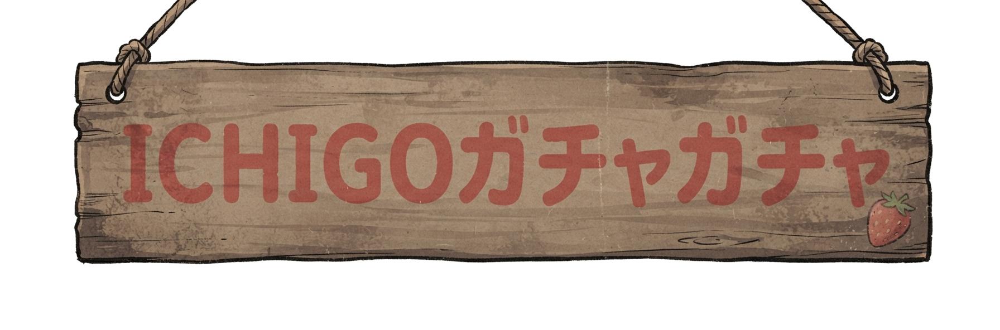
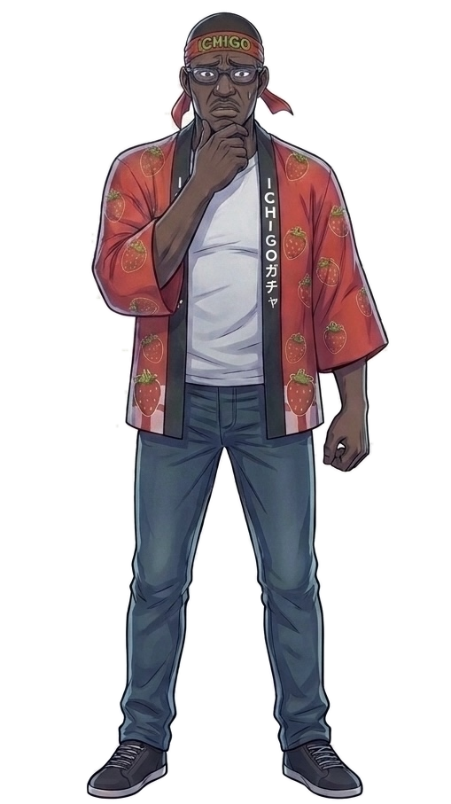
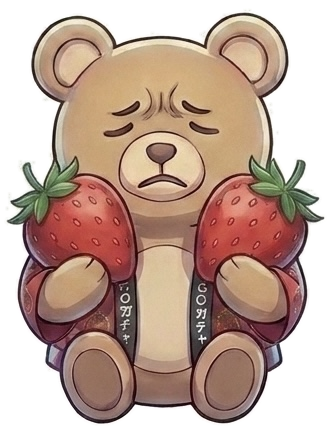
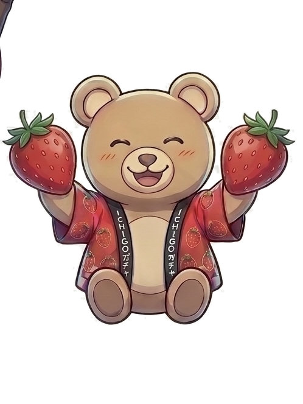
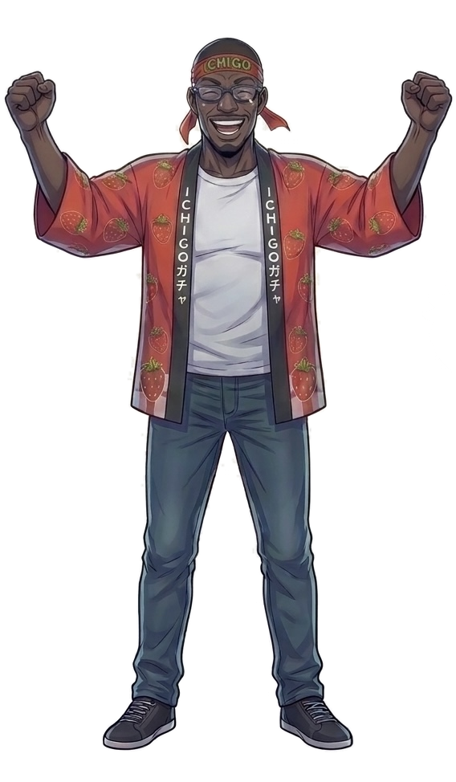
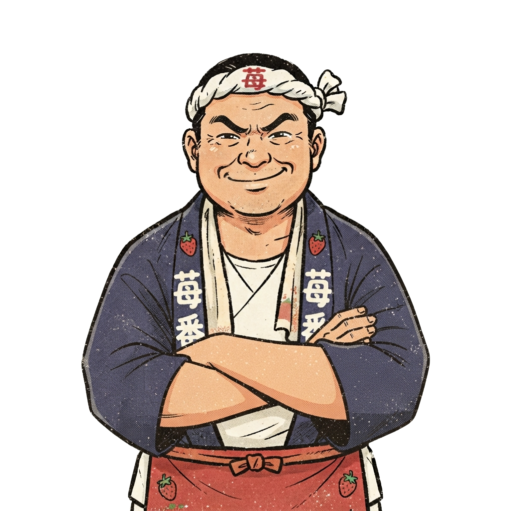
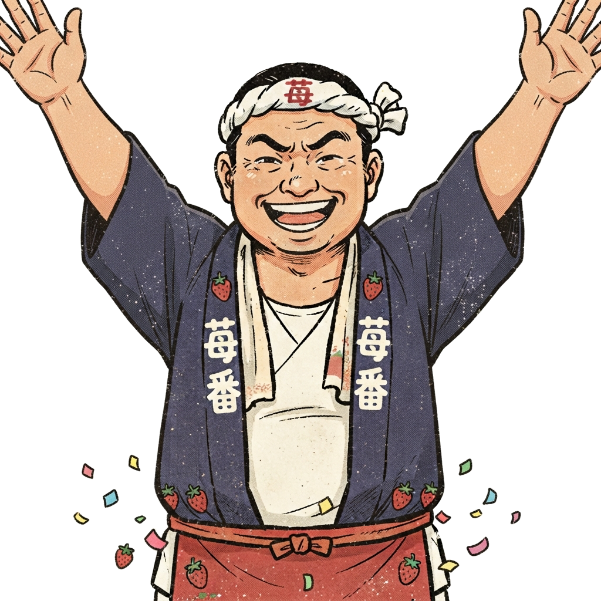

ICHIGOガチャガチャってなに?

段ボール製のガチャガチャを授業内通貨のICHIGOで動かすプロジェクトです。仕組み・あそびかた・つくった裏話をこの1ページにまとめました。待ち時間にゆっくりどうぞ。
🎯さっそくガチャに挑戦する
👆「ICHIGO」は授業内だけで使える講義内通貨です。ICHIGOを送金すると、店番AIがそれを確認して、実機ガチャガチャのロックをそっと解除します。

👆
👆むずかしい操作はありません。スマホとウォレットアプリさえあれば、この5ステップだけです。
QRコードを読み取る
ガチャ本体に貼ってあるQRを読み取ると、決済ページが開きます。
ウォレットを接続する
お持ちのウォレットアプリ(MetaMask等)を接続します。

店番AIと交渉する
値切り交渉にチャレンジ。話し方次第で価格が変わります。

👆
支払う
価格が決まったら、その場でICHIGOを送金します。

レバーを回してカプセルを受け取る
実機のロックが解除されます(自動で出てくるわけではありません)。あとはガチャガチャのレバーを自分の手で回して、カプセルを受け取ってください。
2人でつくりました。
前田 怜音Discord: れのあ
千葉工業大学大学院 情報科学研究科 情報科学専攻 修士1年
研究分野: XR・メタバース領域。テキストや動画から3Dアニメーションを自動生成する技術を研究。
AIやメタバースのような最先端技術を、もっと多くの人が気軽に触れられるものにしたい。そんな技術者を目指しています。
倉持 啓人Discord: おちえく
千葉工業大学大学院 情報科学研究科 情報科学専攻 修士1年
研究分野: 間取りの自動生成・シミュレーション。
ものづくりや、人に喜んでもらえることをするのが好きです。
つくる過程をまとめた動画です。